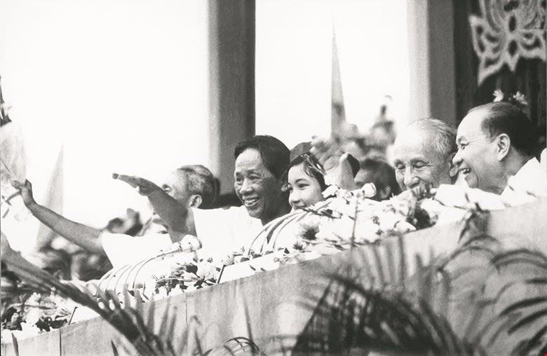
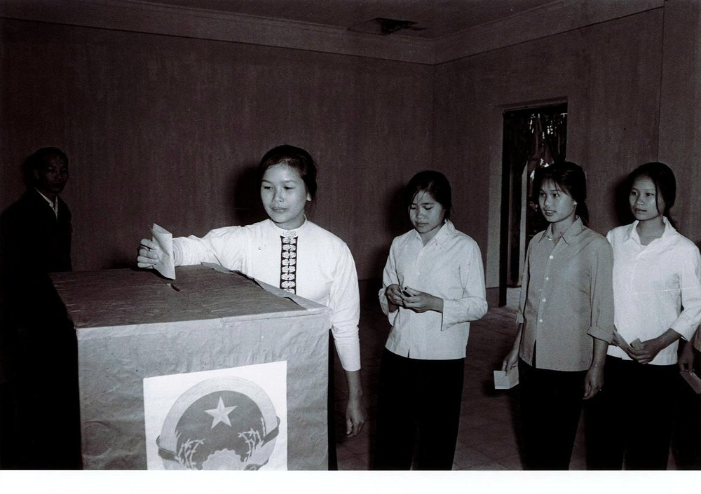
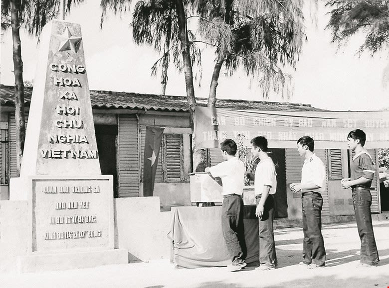
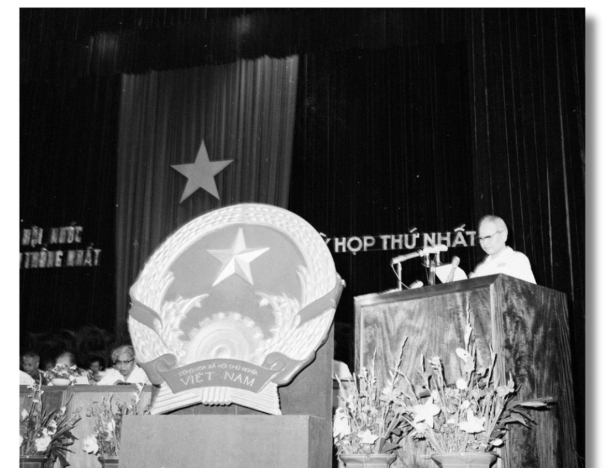
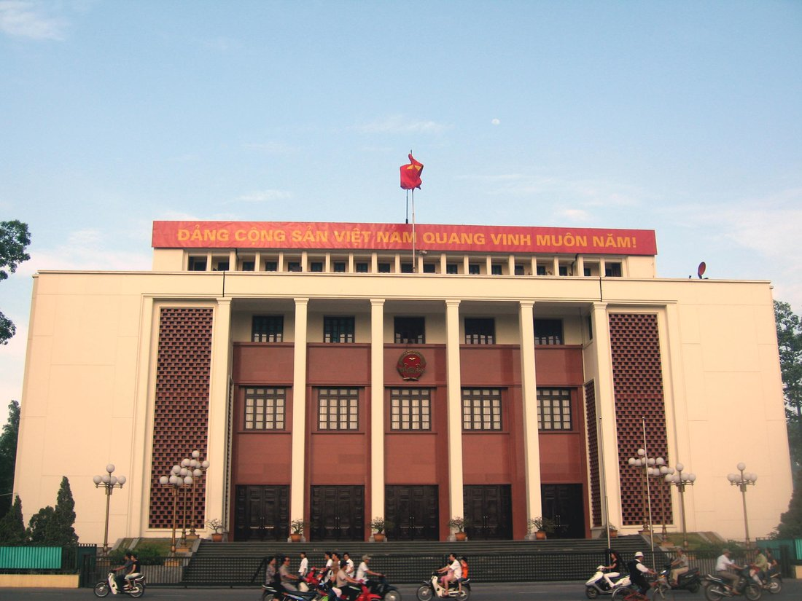
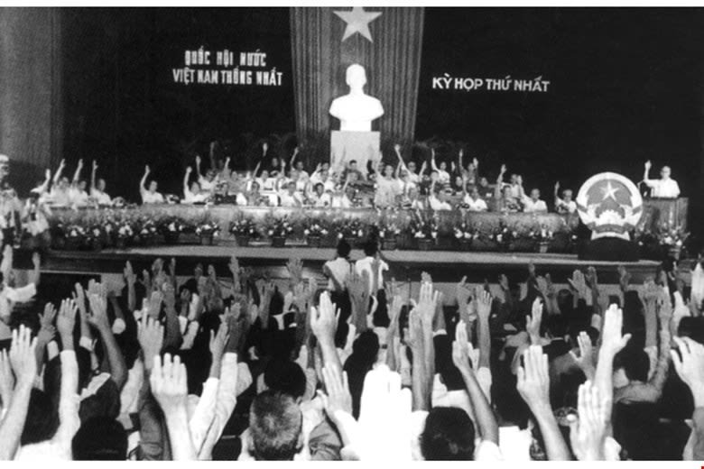
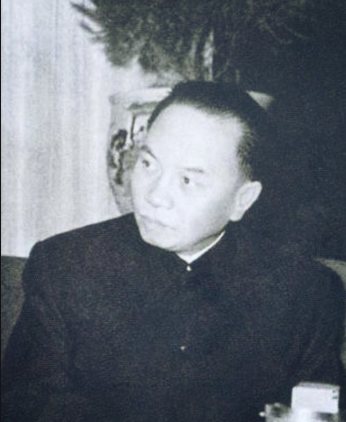
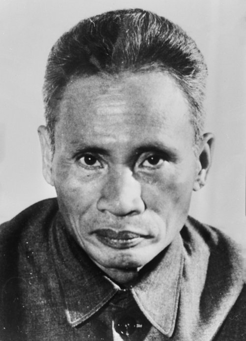
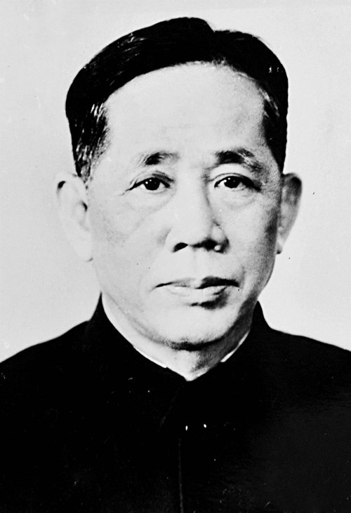

SCROLLYTELLING · TƯ LIỆU 1975 – 1976
MỘT
NƯỚC
Kỳ họp thứ nhất, Quốc hội khóa VI — Quốc hội đầu tiên của nước Việt Nam thống nhất. Hội trường Ba Đình, Hà Nội, 24/6 – 3/7/1976.
CUỘN ĐỂ BIẾN HÌNH ↓
01 · SAU MÙA XUÂN 1975
Hai Nhà nước,
một đất nước
Sau đại thắng Mùa xuân 1975, non sông thu về một mối. Nhưng về mặt pháp lý, trên đất nước vẫn tồn tại hai chính phủ: Chính phủ Việt Nam Dân chủ Cộng hòa ở miền Bắc và Chính phủ Cách mạng lâm thời Cộng hòa miền Nam Việt Nam ở miền Nam.
Nhiệm vụ cấp bách mà Ban Chấp hành Trung ương Đảng Lao động Việt Nam đề ra là phải thực hiện thống nhất nước nhà về mặt Nhà nước — đây cũng là nguyện vọng tha thiết bậc nhất của đồng bào cả nước.


02 · SÀI GÒN, 15 – 21/11/1975
Hiệp thương chọn
một ngày chung
Từ 15 đến 21/11/1975, đại biểu nhân dân hai miền Nam – Bắc tổ chức Hội nghị Hiệp thương chính trị tại thành phố Sài Gòn để bàn vấn đề then chốt, trọng đại: thống nhất Tổ quốc.
“Cần tổ chức sớm cuộc Tổng tuyển cử trên toàn bộ lãnh thổ Việt Nam để bầu ra Quốc hội chung cho cả nước… Quốc hội đó sẽ xác định thể chế Nhà nước, bầu ra các cơ quan lãnh đạo của Nhà nước và quy định Hiến pháp mới.”
— THÔNG BÁO HỘI NGHỊ HIỆP THƯƠNG, 21/11/1975
HỘI ĐỒNG BẦU CỬ TOÀN QUỐC
22 đại biểu
- Mỗi miền cử 11 đại biểu
- Chủ tịch: Trường Chinh
- Phó Chủ tịch: Phạm Hùng
- Nhiệm vụ: hướng dẫn, giám sát bỏ phiếu; tổng kết, tuyên bố kết quả; cấp giấy chứng nhận trúng cử
THEO CHỈ THỊ 228-CT/TW NGÀY 3·1·1976: BẦU CỬ “TRONG CẢ NƯỚC CÙNG MỘT NGÀY” — PHỔ THÔNG, BÌNG ĐẲNG, TRỰC TIẾP, BỎ PHIẾU KÍN
03 · 25/4/1976
Cả nước cùng
bỏ một lá phiếu
Ngày 25/4/1976, hơn 23 triệu cử tri trên toàn bộ lãnh thổ cùng nô nức làm nghĩa vụ công dân — thực sự là ngày hội lớn của toàn thể dân tộc. Cử tri đã bầu đủ 492 đại biểu ngay trong vòng đầu, không nơi nào phải bầu lại hoặc bầu thêm.
TỶ LỆ CỬ TRI ĐI BẦU THEO MIỀN
VĂN KIỆN QUỐC HỘI TOÀN TẬP · TẬP 5


04 · HÀ NỘI, 24/6/1976
Khai mạc tại
Hội trường Ba Đình
Kỳ họp thứ nhất Quốc hội khóa VI khai mạc với 492 đại biểu của 38 tỉnh, thành phố. Đoàn Chủ tịch điều hành kỳ họp gồm 36 thành viên, trong đó có Tôn Đức Thắng, Nguyễn Lương Bằng, Lê Duẩn, Trường Chinh, Phạm Văn Đồng, Phạm Hùng, Nguyễn Hữu Thọ, Huỳnh Tấn Phát…
“Kỳ họp Quốc hội lần này là một cái mốc trong lịch sử phát triển của Nhà nước ta… nhân dân ta nhiệt liệt hoan nghênh Quốc hội mới và đặt nhiều hy vọng vào Quốc hội.”
— LUẬT SƯ NGUYỄN HỮU THỌ, DIỄN VĂN KHAI MẠC
CƠ CẤU 492 ĐẠI BIỂU TRÚNG CỬ
26,21% NỮ · 14,28% DÂN TỘC THIỂU SỐ · 94 NGOÀI ĐẢNG · THANG CỘT 0–30%


05 · NGÀY 2/7/1976
Nghị quyết đầu tiên:
gọi tên đất nước
Trong ngày 2/7/1976, Quốc hội nhất trí thông qua 6 nghị quyết quan trọng. Nghị quyết đầu tiên — về tên nước, quốc kỳ, quốc huy, thủ đô và quốc ca — gồm 5 điểm:
- 1
Tên nước: nước Cộng hòa xã hội chủ nghĩa Việt Nam
- 2
Quốc kỳ: nền đỏ, ở giữa có ngôi sao vàng năm cánh
- 3
Quốc huy: sao vàng, bông lúa, nửa bánh xe răng cưa
- 4
Thủ đô: Hà Nội
- 5
Quốc ca: bài Tiến quân ca
TM. ĐOÀN CHỦ TỊCH — TRƯỜNG CHINH · HÀ NỘI, 02·07·1976

06 · NHÀ NƯỚC THỐNG NHẤT
Bộ máy Nhà nước
đầy đủ lần đầu tiên
Quốc hội bầu Tôn Đức Thắng làm Chủ tịch nước; Nguyễn Lương Bằng và Nguyễn Hữu Thọ làm Phó Chủ tịch nước; Trường Chinh làm Chủ tịch Quốc hội; Phạm Văn Đồng làm Thủ tướng Chính phủ cùng 7 Phó Thủ tướng: Phạm Hùng, Huỳnh Tấn Phát, Võ Nguyên Giáp, Nguyễn Duy Trinh, Lê Thanh Nghị, Võ Chí Công, Đỗ Mười.
Thành phố Sài Gòn – Gia Định chính thức được đặt tên là thành phố Hồ Chí Minh. Khi chưa có Hiến pháp mới, Nhà nước hoạt động trên cơ sở Hiến pháp 1959; Ủy ban Dự thảo Hiến pháp gồm 36 thành viên do Trường Chinh làm Chủ tịch.
TỔ CHỨC NHÀ NƯỚC KHI CHƯA CÓ HIẾN PHÁP MỚI
- Quốc hội
- Chủ tịch nước & 2 Phó Chủ tịch
- Ủy ban Thường vụ Quốc hội
- Hội đồng Chính phủ
- Hội đồng Quốc phòng
- Tòa án nhân dân tối cao
- Viện kiểm sát nhân dân tối cao
CƠ SỞ: HIẾN PHÁP 1959 · CHỜ HIẾN PHÁP MỚI
03·7·1976 BẾ MẠC — 50 NĂM SAU
MỘT CÁI TÊN,
ĐI SUỐT HÀNH TRÌNH
Kỳ họp bế mạc ngày 3/7/1976, hoàn thành thống nhất đất nước về mặt Nhà nước. Quốc hội khóa VI hoạt động đến 23/6/1981; ngày 18/12/1980, tại kỳ họp thứ bảy, Quốc hội thông qua Hiến pháp 1980 — Hiến pháp đầu tiên của nước Cộng hòa xã hội chủ nghĩa Việt Nam.

CHỦ TỊCH NƯỚC

CHỦ TỊCH QUỐC HỘI

THỦ TƯỚC

PHÓ CHỦ TỊCH NƯỚC

BÁO CÁO CHÍNH TRỊ
TƯ LIỆU: DANGCONGSAN.VN (TS. BÙI NGỌC THANH) · WIKIPEDIA · VIETNAMPLUS · QUOCHOI.VN · ẢNH: TTXVN, NHÂN DÂN, WIKIMEDIA COMMONS, DANVIET